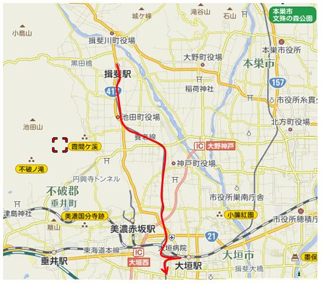
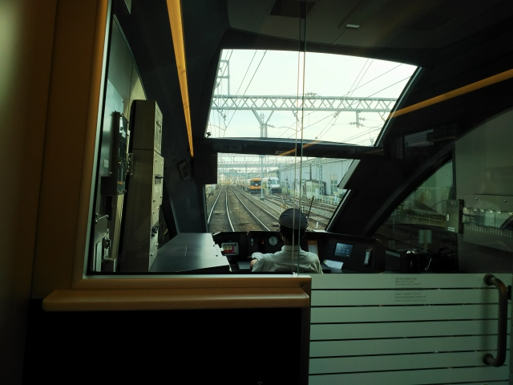

ひとつ昭和の香りのする駅がなくなります。
ホームの端に養老鉄道の電車を発見。元近鉄養老線な
ので、カラーリングも昔の近鉄ですね。
そうです。せっかく名古屋まで行くので、いろいろ寄
り道していきます！
養老駅到着。降りてみたい駅なんやけど、時間がな
い！ぶらさがってるのはヒョウタンやね。
養老鉄道は、桑名からここまでのほうが、おもむき
がありますね。今ふうに言うと「エモい」か？
大垣で乗換えて、終点の揖斐駅到着。
桑名から揖斐まで直通する列車はなく、全て大垣で
乗り換えが必要です。

大垣に戻ります。
大垣駅。ここにも東急車両が進出！うざい。

車庫のある西大垣駅まで足をのばします。奥に近鉄
ラビットカー塗装の車輛が見えます。
この写真撮るのにホームに残ってたら、駅員にめっ
ちゃ不審そうに見られたわ。失礼な！
ええ感じの駅です。
昔、みんなで来たよな？

ひのとりの発車までまだ時間はあるので、長良川に
残る渡し船に乗りに行きました。
西岐阜駅まで出て、そこから長良川まで歩きます。
河川敷を水辺まで進むと、向こう岸に居た渡し船が
気付いてくれてこちら側に来てくれました。
小紅の渡し（おべにのわたし）、と呼ばれています。
もちろん、客は私一人です・・・
なんとも気持ちの良い時間です。
着いた先は堤防が高くて、えっちらおっちら階段を
登ります。
今日はのどかな感じでしたが、毎月２１日は近くの
寺の縁日かなにかでえらく賑わうそうです。
渡し船も乗り尽くした感があるんやけど、九州にな
いか？情報よろしく！
バスで岐阜駅に戻って、ＪＲで名古屋に行きます。
そしてとうとう「ひのとり」がっ！
さすが、新しい近鉄のフラッグシップ車両、光輝いてますねぇ。
この特急乗車位置の表示の機械も、塗り替えられて
まうんやろか・・・

待望の先頭座席からの眺め。ん～いいですねぇ。
真ん中席がベストやったけど、隣に誰が来るかわか
らん怖さがあるしなぁ。
そして、鉄道ジャーナル誌の表紙になる？！